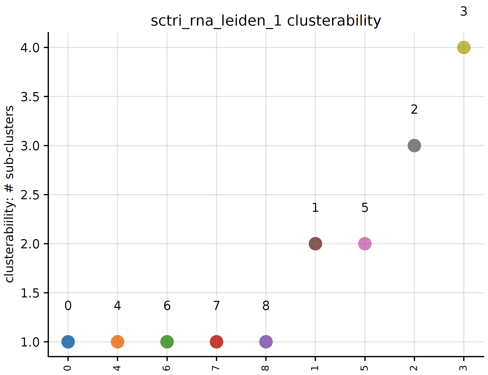

API¶
ScTriangulate Class¶
- class sctriangulate.main_class.ScTriangulate(dir, adata, query, species='human', criterion=2, verbose=1, reference=None, add_metrics={'tfidf5': <function tf_idf5_for_cluster>}, predict_doublet=True)¶
How to create/instantiate ScTriangulate object.
- Parameters
dir – Output folder path on the disk
adata – input adata file
query – a python list contains the annotation names to query
Example:
adata = sc.read('pbmc3k_azimuth_umap.h5ad') sctri = ScTriangulate(dir='./output',adata=adata,query=['leiden1','leiden2','leiden3'])
- penalize_artifact(mode, stamps=None, parallel=True)¶
void mode is to set stamp position to 0, stamp is like {leiden1:5}
(static) salvage_run()¶
- sctriangulate.main_class.ScTriangulate.salvage_run(step_to_start, last_step_file, compute_metrics_parallel=True, scale_sccaf=True, compute_shapley_parallel=True, win_fraction_cutoff=0.25, reassign_abs_thresh=10, assess_pruned=True, viewer_cluster=True, viewer_cluster_keys=None, viewer_heterogeneity=True, viewer_heterogeneity_keys=None)¶
This is a static method, which allows to user to resume running scTriangulate from certain point, instead of running from very beginning if the intermediate files are present and intact.
- Parameters
step_to_start – string, now support ‘assess_pruned’.
last_step_file – string, the path to the intermediate from which we start the salvage run.
Other parameters are the same as
lazy_runfunction.Examples:
ScTriangulate.salvage_run(step_to_start='assess_pruned',last_step_file='output/after_rank_pruning.p')
(statis) deserialize()¶
- sctriangulate.main_class.ScTriangulate.deserialize(name)¶
This is static method, to deserialize a pickle file on the disk back to the ram as a sctri object
- Parameters
name – string, the name of the pickle file on the disk.
Examples:
ScTriangulate.deserialize(name='after_rank_pruning.p')
confusion_to_df()¶
- sctriangulate.main_class.ScTriangulate.confusion_to_df(self, mode, key)¶
Print out the confusion matrix with cluster labels (dataframe).
- Parameters
mode – either ‘confusion_reassign’ or ‘confusion_sccaf’
mode – python string, for example, ‘annotation1’
Examples:
sctri.confusion_to_df(mode='confusion_reassign',key='annotation1')
gene_to_df()¶
- sctriangulate.main_class.ScTriangulate.gene_to_df(self, mode, key, raw=False, col='purify', n=100)¶
Output {mode} genes for all clusters in one annotation (key), mode can be either ‘marker_genes’ or ‘exclusive_genes’.
- Parameters
mode – python string, either ‘marker_genes’ or ‘exclusive_genes’
key – python string, annotation name
raw – False will generate non-raw (human readable) format. Default: False
col – Only when mode==’marker_genes’, whether output ‘whole’ column or ‘purify’ column. Default: purify
n – Only when mode==’exclusive_genes’, how many top exclusively expressed genes will be printed for each cluster.
Examples:
sctri.gene_to_df(mode='marker_genes',key='annotation1') sctri.gene_to_df(mode='exclusive_genes',key='annotation1')
get_metrics_and_shapley()¶
- sctriangulate.main_class.ScTriangulate.get_metrics_and_shapley(self, barcode, save=True)¶
For one single cell, given barcode/or other unique index, generate the all conflicting cluster from each annotation, along with the metrics associated with each cluster, including shapley value.
- Parameters
barcode – string, the barcode for the cell you want to query.
save – save the returned dataframe to directory or not. Default: True
- Returns
DataFrame
Examples:
sctri.confusion_to_df(barcode='AAACCCACATCCAATG-1',save=True)

lazy_run()¶
- sctriangulate.main_class.ScTriangulate.lazy_run(self, compute_metrics_parallel=True, scale_sccaf=True, compute_shapley_parallel=True, win_fraction_cutoff=0.25, reassign_abs_thresh=10, assess_pruned=True, viewer_cluster=True, viewer_cluster_keys=None, viewer_heterogeneity=True, viewer_heterogeneity_keys=None)¶
This is the highest level wrapper function for running every step in one goal.
- Parameters
compute_metrics_parallel – boolean, whether to parallelize
compute_metricsstep. Default: Truescale_sccaf – boolean, whether to first scale the expression matrix before running sccaf score. Default: True
compute_shapley_parallel – boolean, whether to parallelize
compute_parallelstep. Default: Truewin_fraction_cutoff – float, between 0-1, the cutoff for function
add_invalid_by_win_fraction. Default: 0.25reassign_abs_thresh – int, the cutoff for minimum number of cells a valid cluster should haves. Default: 10
assess_pruned – boolean, whether to run same cluster assessment metrics on final pruned cluster labels. Default: True
viewer_cluster – boolean, whether to build viewer html page for all clusters’ diagnostic information. Default: True
viewer_cluster_keys – list, clusters from what annotations we want to view on the viewer, only clusters within this annotation whose diagnostic plot will be generated under the dir name figure4viewer. Default: None, means all annotations in the sctri.query will be used.
viewer_heterogeneity – boolean, whether to build the viewer to show the heterogeneity based on one reference annotation. Default: True
viewer_heterogeneity_keys – list, the annotations we want to serve as the reference. Default: None, means the first annotation in sctri.query will be used as the reference.
Examples:
sctri.lazy_run(viewer_heterogeneity_keys=['annotation1','annotation2'])
add_to_invalid()¶
- sctriangulate.main_class.ScTriangulate.add_to_invalid(self, invalid)¶
add individual raw cluster names to the sctri.invalid attribute list.
- Parameters
invalid – list or string, contains the raw cluster names to add
Examples:
sctri.add_to_invalid(invalid=['annotation1@c3','annotation2@4']) sctri.add_to_invalid(invalid='annotation1@3')
add_to_invalid_by_win_fraction()¶
- sctriangulate.main_class.ScTriangulate.add_to_invalid_by_win_fraction(self, percent=0.25)¶
add individual raw cluster names to the sctri.invalid attribute list by win_fraction
- Parameters
percent – float, from 0-1, the fraction of cells within a cluster that were kept after the game. Default: 0.25
Examples:
sctri.add_to_invalid_by_win_fraction(percent=0.25)
clear_invalid()¶
- sctriangulate.main_class.ScTriangulate.clear_invalid(self)¶
reset/clear the sctri.invalid to an empty list
Examples:
sctri.clear_invalid()
serialize()¶
- sctriangulate.main_class.ScTriangulate.serialize(self, name='sctri_pickle.p')¶
serialize the sctri object through pickle protocol to the disk
- Parameters
name – string, the name of the pickle file on the disk. Default: sctri_pickle.p
Examples:
sctri.serialize()
add_new_metrics()¶
- sctriangulate.main_class.ScTriangulate.add_new_metrics(self, add_metrics)¶
Users can add new callable or pre-implemented function to the sctri.metrics attribute.
- Parameters
add_metrics – dictionary like {‘metric_name’: callable}, the callable can be a string of a scTriangulate pre-implemented function, for example, ‘tfidf5’,’tfidf1’. Or a callable.
Examples:
sctri.add_new_metrics(add_metrics={'tfidf1':tfidf1}) # make sure first from sctriangualte.metrics import tfidf1
plot_winners_statistics()¶
- sctriangulate.main_class.ScTriangulate.plot_winners_statistics(self, col, fontsize=3, plot=True, save=True)¶
For triangulated clusters, either ‘raw’ or ‘pruned’, visualize what fraction of cells won the game. A horizontal barplot will be generated and a dataframe with winners statistics will be returned.
- Parameters
col – string, either ‘raw’ or ‘pruned’
fontsize – int, the fontsize for the y-label. Default: 3
plot – boolean, whether to plot or not. Default: True
save – boolean, whether to save the plot to the sctri.dir or not. Default: True
- Returns
DataFarme
Examples:
sctri.plot_winners_statistics(col='raw',fontsize=4)

plot_clusterability()¶
- sctriangulate.main_class.ScTriangulate.plot_clusterability(self, key, col, fontsize=3, plot=True, save=True)¶
We define clusterability as the number of sub-clusters the program finds out. If a cluster has being suggested to be divided into three smaller clusters, then the clueterability of this cluster will be 3.
- Parameters
key – string. The clusters from which annotation that you want to assess clusterability.
col – string. Either ‘raw’ cluster or ‘pruned’ cluster.
fontsize – int. The fontsize of x-ticklabels. Default: 3
plot – boolean. Whether to plot the scatterplot or not. Default : True.
save – boolean. Whether to save the plot or not. Default: True
- Returns
python dictionary. {cluster1:#sub-clusters}
Examples:
sctri.plot_clusterability(key='sctri_rna_leiden_1',col='raw',fontsize=8)
plot_heterogeneity()¶
- sctriangulate.main_class.ScTriangulate.plot_heterogeneity(self, key, cluster, style, col='pruned', save=True, format='pdf', genes=None, umap_zoom_out=True, umap_dot_size=None, subset=None, marker_gene_dict=None, jitter=True, rotation=60, single_gene=None, dual_gene=None, multi_gene=None, merge=None, to_sinto=False, to_samtools=False, cmap='YlOrRd', **kwarg)¶
Core plotting function in scTriangulate.
Example:
sctri.plot_heterogeneity('leiden1','0','umap',subset=['leiden1@0','leiden3@10']) sctri.plot_heterogeneity('leiden1','0','heatmap',subset=['leiden1@0','leiden3@10']) sctri.plot_heterogeneity('leiden1','0','violin',subset=['leiden1@0','leiden3@10'],genes=['MAPK14','ANXA1']) sctri.plot_heterogeneity('leiden1','0','sankey') sctri.plot_heterogeneity('leiden1','0','cellxgene') sctri.plot_heterogeneity('leiden1','0','heatmap+umap',subset=['leiden1@0','leiden3@10'],marker_gene_dict=marker_gene_dict) sctri.plot_heterogeneity('leiden1','0','dual_gene',dual_gene=['MAPK14','CD52'])
- Parameters
key – annotation key
cluster – cluster name in each annotation